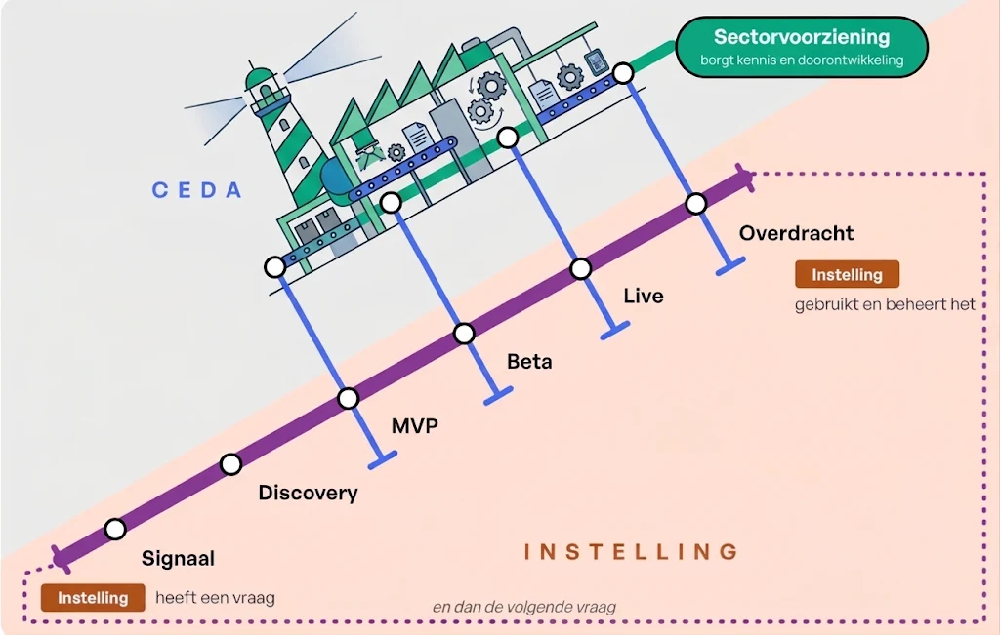

CEDA in 2027: wat doen we wel, en wat niet?
Eerst het geheel ordenen, dan de mensen, dan prioriteren.
Corneel den Hartogh · CEDA · woensdag 18 november 2026
Vandaag: helderheid voor 2027
Uitkomst: een geordend overzicht, de capaciteit op een rij, en per onderdeel nu, later of niet. De roadmap volgt daarna.
| Onderdeel | Werkvorm | Duur | |
|---|---|---|---|
| 1 | Overzicht van het geheel: wat beloven we, wat doen we, hoe hangt het samen? | plenair | 20 min |
| 2 | Mensen: het team in 2026 en in 2027 | plenair | 8 min |
| 3 | Prioriteren: gemaakte keuzes, open keuzes, dan nu / later / niet | gesprek · samen schuiven | 25 min |
| 4 | Vervolg: wie trekt wat, wat gaat naar de roadmap? | plenair | 5 min |
Overzicht van het geheel
Wat beloven we, wat doen we, en waar staat het?

Alles wat we doen, in vier groepen
Projecten*
- Uitnodigingsregel2027 · geïmplementeerd bij 5 extra mbo-instellingen
- Instroomprognose2027 · geïmplementeerd bij instellingen in hbo en wo
- Sectorale informatievoorziening2027 · standaard inzichten op uniforme onderwijsdata voor mbo, hbo en wo, met potentie voor benchmarking
- Samenwijzer2027 · MVP in mbo gevalideerd
- SkillsRadar2027 · discovery gevalideerd, MVP opgestart
- NKO · betapotentieel
- Open-onderwijsdata-chat
- MCP en EduGenAI · verbinding met EduGenAI
- Instellingsdata-chat
- Synthetische data · UvA, ROC Mondriaan?, Haagse Hogeschool?
* Projecten draaien nu in het mbo óf in hbo/wo. In de andere sector kunnen we een MVP starten.
Standaarden en adoptie
- Eigen methode · templates, bouwstenen, agents
- Datastandaarden en HORA/MORAnieuw2027 · plaatsing tools op HORA/MORA verkend
- Datavolwassenheid · Stephan?incl. data-geletterdheid voor wie na de data-analisten komt2027 · op de kaart, o.a. met de Quick Scan
- Publieke waarden binnen CEDA-trajecten · John?
CEDA als sectorvoorziening
- Regulatory sandboxpotentieel
- Verkenning data en digitale autonomie?
- Way of working · metrolijn, project-repo's, MKM
- Community, workshops en werkgroepen
- Borging na Npuls · i.s.m. sectoraanvoerders
Samenwerkingen
- Datacoalitie mbo
- Datacoalitie hbonieuw2027 · praktische verkenning met enkele instellingen
- UvA, ROC Mondriaan?, Haagse Hogeschool? · via synthetische data
- Npuls · Leren zonder drempels · basis voor toekomstige uniforme data
- SURF Federatief Datastelsel · veilige data-uitwisseling
- Npuls · GenAI
- SURF Regie op data
- SURF Architectuur
- Npuls · Adoptieteam
- Npuls · Kennisinfrastructuur
Drie lijnen uit sectordoel 13, één kaart

Discovery tot en met Live: werktitels uit de landkaart van Ash. Signaal en Overdracht: voorstel.
Klopt dit beeld? Standaarden haken per station aan, de sectorvoorziening rijdt mee als tweede spoor. Wat vraagt elke poort, en wat betekent dit voor hoe we standaarden en sectorvoorziening plannen?
Mensen
Wie hebben we in 2027, en hoeveel uur?

Van 17 naar 13 mensen, met minder versnippering
| Naam | 2026 | 2027 |
|---|---|---|
| Corneel den Hartoghprojectleider | 40 | 36 |
| Tomer Iwanengineer | 32 | 32 |
| Steven Ramondtdata scientist | 32 | 32 |
| Aslam Tanjungdata scientist | 32 | 32 |
| Muhammet Ozerdata scientist | 32 | 32 |
| Ed de Feberdata scientist | 32 | 32 |
| Edwin Lieftinkstrategie en servicedesign | 24 | 24 |
| Annie Slotboomverbinder | 18½ | 18 |
| Michael Gobusiness developer | 12 | 12 |
| Alan Bergdata scientist | 8 | 8 |
2027 ligt op het niveau van 2026
2026 effectief: Annie, Melanie, Caspar en Maarten tellen voor de helft. 2027 vast: alle dertien mensen (Stephan en John onder voorbehoud), zonder open ruimte en opties.
Prioriteren
Gemaakte keuzes, open keuzes, dan nu, later of niet.

Dit gaan we gewoon oppakken
Nieuw
- Datastandaarden en HORA/MORA
- Datacoalitie hbo opzettenverkennen · Annie
- Structurele samenwerking met instellingen vormgeven, voor trajecten buiten de datacoalitie mbo · Annie
- Datavolwassenheid en ethiek, vanuit publieke waarden · Stephan, John
- Ieder project heeft een coördinator die niet programmeert
Huidige projecten: MVP in ander onderwijstype?
- InstroomprognoseMVP in het mbo?
- Samenwijzer / UitnodigingsregelMVP in hbo/wo?
- Sectorale informatievoorzieningMVP in mbo? Staat van Opleiding naar beta? Koppelen met chat?
Nog open
- Innovatiekunnen we discovery heel klein en publiek vormgeven? Of willen we dit binnen andere projecten doen?
- Datastandaardenhoe, en wie trekt?
- Way of workingprojectmatig werken verbinden met MKM: is iedereen aan boord, of moet er eerst nog iets gebeuren?
- Chat bij instellinghebben we hiervoor genoeg capaciteit?
- Wie of wat gaan we aannemen?
Wat besluiten we, per keuze?
Nu, later of niet?
Weeg mee: belofte 2027 · vraag van instellingen · trekker met uren · afhankelijk van een ander subdomein.
Van keuzes naar een roadmap
De roadmap volgt later: deze mensen, dit werk, in deze volgorde.